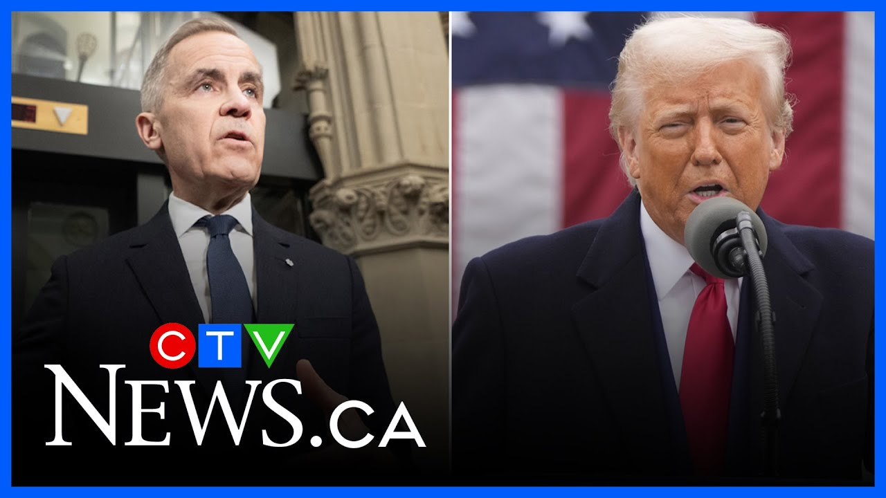

来B站一起耍【Global每日英语简报】
【美国总统特朗普在与卡尼总理会晤后可能重回“经济战”】
Summary: Eric Ham discusses the upcoming meeting between Trump and PM Carney, highlighting concerns over Trump's use of false data on Canada-U.S. trade and the need for constructive dialogue to avoid escalating tensions.
摘要： 埃里克·汉姆讨论了特朗普与卡尼总理即将举行的会晤，强调了对特朗普在美加贸易问题上使用虚假数据的担忧，以及需要通过建设性对话避免紧张局势升级。

⏱️ Estimated Reading Time: 5 min
And joining me now, Eric Ham, RCTV News US political analyst.
现在加入我们的是RCTV新闻美国政治分析师埃里克·汉姆。
Eric, thanks as always for joining us.
埃里克，感谢你一如既往地加入我们。
It's good to be with you.
很高兴和你在一起。
Thanks for having me.
谢谢邀请我。
Okay, this meeting is Tuesday.
好的，这次会晤是在周二。
That's a lifetime away with Donald Trump, isn't it?
对特朗普来说，这就像一辈子那么远，不是吗？
What What do you think we can expect leading up to the meeting and then the meeting itself?
你认为在会晤前和会晤期间我们可以期待什么？
Well, I think we're going to hear from both men who are going to be talking about not only what they want to get out of the meeting, but also making clear what the challenges are, particularly around the issue of trade.
我认为我们将听到双方不仅谈论他们希望从会晤中得到什么，还会明确挑战是什么，尤其是在贸易问题上。
And we know Donald Trump has used a lot of false data when talking about the relationship between Canada and the United States.
我们知道特朗普在谈论加拿大和美国关系时使用了很多虚假数据。
So, we're going to continue to hear that.
所以，我们会继续听到这些。
I think it will be incumbent upon the prime minister to actually certainly set the record straight in terms of the relationship and also find a way to get Donald Trump to move from this this false this this false narrative of the relationship because we know that's how Donald Trump is engaging in very debilitating trade policies with Canada.
我认为总理有责任澄清两国关系的真相，并找到方法让特朗普摆脱这种虚假的叙事，因为我们知道特朗普正是以此对加拿大实施非常有害的贸易政策。
And so if he can find a way to move Donald Trump away from that, I think that will make for a much more constructive meeting that will take place on Tuesday.
因此，如果他能让特朗普摆脱这一点，我认为周二的会晤将会更具建设性。
If not, then I think we could see a very combustible, perhaps very spirited uh meeting and uh of course press aail between the two men.
否则，我认为我们可能会看到一场非常激烈、甚至火药味十足的会晤，当然还有两人之间的媒体交锋。
Now, is it stick and carrot for Carney?
那么，对卡尼来说是胡萝卜加大棒吗？
Just the carrot?
只有胡萝卜？
Just the stick?
还是只有大棒？
How what what would Trump best respond to, do you think?
你认为特朗普最可能对什么做出回应？
I think I think Donald Trump is looking for a a a a a relationship that works, but I also think what we're seeing from Donald Trump is Donald Trump wants a subservient relationship with Canada.
我认为特朗普在寻找一种有效的关系，但我们也看到特朗普希望加拿大服从于美国。
He wants Canada to be a part of the United States.
他希望加拿大成为美国的一部分。
That's not going to happen.
这不会发生。
But that's where Donald Trump is.
但这就是特朗普的立场。
How does how does Carney move Donald Trump from that position?
卡尼如何让特朗普改变立场？
It's it's it's anyone's guess at this point.
目前谁也说不准。
And also what we can see in terms of this meeting, this could be a meeting where you have two men playing nice, acting nice, saying all the right things, and then once the meeting is over, Donald Trump goes back to economic war for warfare against Canada.
此外，就这次会晤而言，我们可能会看到两人表现得友好、说正确的话，但会晤一结束，特朗普又会对加拿大发动经济战。
That certainly is not what we want to say, what the prime minister wants to see either, but clearly uh the prime minister needs to be prepared for both in all situations.
这当然不是我们想看到的，也不是总理希望发生的，但显然总理需要为所有情况做好准备。
And with Trump, do you think we'll see him calling Carney the 51st governor like they like he did with Trudeau?
你认为特朗普会像称呼特鲁多那样称卡尼为“第51州州长”吗？
he has not done so uh at this time and I don't believe that he will.
目前他还没有这样做，我认为他也不会。
I think there was clearly just a a personal animus that Donald Trump had for Justin Trudeau and I think at least in terms of the personal relationship between the prime minister and the president.
我认为特朗普对特鲁多显然有个人敌意，至少在总理和总统的个人关系上是这样。
I think it's on a very different much more amicable footing and so that certainly will help as well.
我认为现在的关系更加友好，这当然也有帮助。
And what do you think a realistic outcome is of this meeting?
你认为这次会晤的现实结果会是什么？
I think a realistic outcome of this meeting would be the president actually standing down and moving away from these tariffs that he has actually placed on on Canada particularly when it comes to aluminum and steel and also in terms of what he's looking at in terms of lumber and we know commerce department is also focusing on tariffs on pharmaceuticals which would certainly impact Canada as well considering they send they ship so many of pharmaceutical items to the United So if Donald Trump can move away from that, that will certainly I think be a boom to both economies considering that both contracted during the first quarter.
我认为这次会晤的现实结果可能是总统取消对加拿大加征的关税，尤其是在铝、钢和木材方面，而且我们知道商务部还在关注药品关税，这也会影响加拿大，因为他们向美国出口了大量药品。如果特朗普能取消这些关税，考虑到两国经济在第一季度都出现萎缩，这对两国经济都将是一个利好。
Okay, Eric, thanks as always, sir.
好的，埃里克，一如既往地感谢你。
You bet.
不客气。
Thank you.
谢谢。